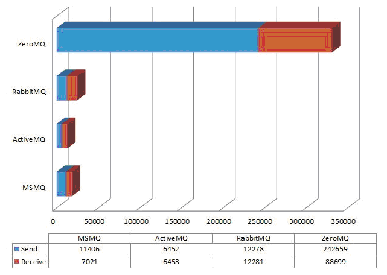

1 ZeroMQ概述
ZeroMQ是一种基于消息队列的多线程网络库，其对套接字类型、连接处理、帧、甚至路由的底层细节进行抽象，提供跨越多种传输协议的套接字。ZeroMQ是网络通信中新的一层，介于应用层和传输层之间（按照TCP/IP划分），其是一个可伸缩层，可并行运行，分散在分布式系统间。
2 系统架构
2.1总体架构
ZeroMQ几乎所有的I/O操作都是异步的，主线程不会被阻塞。ZeroMQ会根据用户调用zmq_init函数时传入的接口参数，创建对应数量的I/O Thread。每个I/O Thread都有与之绑定的Poller，Poller采用经典的Reactor模式实现，Poller根据不同操作系统平台使用不同的网络I/O模型（select、poll、epoll、devpoll、kequeue等）。主线程与I/O线程通过Mail Box传递消息来进行通信。Server开始监听或者Client发起连接时，在主线程中创建zmq_connecter或zmq_listener，通过Mail Box发消息的形式将其绑定到I/O线程，I/O线程会把zmq_connecter或zmq_listener添加到Poller中用以侦听读/写事件。Server与Client在第一次通信时，会创建zmq_init来发送identity，用以进行认证。认证结束后，双方会为此次连接创建Session，以后双方就通过Session进行通信。每个Session都会关联到相应的读/写管道， 主线程收发消息只是分别从管道中读/写数据。Session并不实际跟kernel交换I/O数据，而是通过plugin到Session中的Engine来与kernel交换I/O数据。
图1总体架构
2.2所处层次
ZeroMQ不是单独的服务或者程序，仅仅是一套组件，其封装了网络通信、消息队列、线程调度等功能，向上层提供简洁的API，应用程序通过加载库文件，调用API函数来实现高性能网络通信。
图2所处层次
2.3消息模型
ZeroMQ将消息通信分成4种模型，分别是一对一结对模型（Exclusive-Pair）、请求回应模型（Request-Reply）、发布订阅模型（Publish-Subscribe）、推拉模型（Push-Pull）。这4种模型总结出了通用的网络通信模型，在实际中可以根据应用需要，组合其中的2种或多种模型来形成自己的解决方案。
2.3.1 一对一结对模型
最简单的1:1消息通信模型，可以认为是一个TCP Connection，但是TCP Server只能接受一个连接。数据可以双向流动，这点不同于后面的请求回应模型。
2.3.2 请求回应模型
由请求端发起请求，然后等待回应端应答。一个请求必须对应一个回应，从请求端的角度来看是发-收配对，从回应端的角度是收-发对。跟一对一结对模型的区别在于请求端可以是1~N个。该模型主要用于远程调用及任务分配等。Echo服务就是这种经典模型的应用。
图3请求回应模型
2.3.3 发布订阅模型
发布端单向分发数据，且不关心是否把全部信息发送给订阅端。如果发布端开始发布信息时，订阅端尚未连接上来，则这些信息会被直接丢弃。订阅端未连接导致信息丢失的问题，可以通过与请求回应模型组合来解决。订阅端只负责接收，而不能反馈，且在订阅端消费速度慢于发布端的情况下，会在订阅端堆积数据。该模型主要用于数据分发。天气预报、微博明星粉丝可以应用这种经典模型。
图4发布订阅模型
2.3.4 推拉模型
Server端作为Push端，而Client端作为Pull端，如果有多个Client端同时连接到Server端，则Server端会在内部做一个负载均衡，采用平均分配的算法，将所有消息均衡发布到Client端上。与发布订阅模型相比，推拉模型在没有消费者的情况下，发布的消息不会被消耗掉；在消费者能力不够的情况下，能够提供多消费者并行消费解决方案。该模型主要用于多任务并行。
图5 推拉模型
2.4通信协议
提供进程内、进程间、机器间、广播等四种通信协议。通信协议配置简单，用类似于URL形式的字符串指定即可，格式分别为inproc://、ipc://、tcp://、pgm://。ZeroMQ会自动根据指定的字符串解析出协议、地址、端口号等信息。
3 工作流程

图6 基本流程
4 性能分析
目前，市面上类似的产品不少，主要有4种：MSMQ（微软产品）、ActiveMQ（Java）、RabbitMQ(Erlang)、ZeroMQ（C++）。除ZeroMQ外，其它3款产品都是一个单独服务或者进程，需要单独安装和运行，且对环境有一定依赖。其中，MSMQ在非Windows平台下安装非常复杂，ActiveMQ需要目标机器上已经安装了Java，RabbitMQ需要Erlang环境。而ZeroMQ是以库的形式存在，由应用程序加载、运行即可。但是ZeroMQ仅提供非持久性的消息队列。
图7是来自于Internet的性能测试数据。显示的是每秒钟发送和接受的消息数。整个过程共产生1百万条1K的消息，测试环境为Windows Vista。从测试数据可以看出，ZeroMQ的性能远远高于其它3个MQ。
但是测试数据仅供参考，因为缺少必须的环境参数和性能指标，比如：CPU参数、内存参数、消息模型、通信协议、极限时消耗CPU百分比、极限时消耗内存百分比等。

图7性能测试
5 应用场景
应用ZeroMQ的Push-Pull模型实现联众游戏服务器的“热插拔”、负载均衡和消息派发。按照如图8部署服务器，Push端充当Gateway，作为一组游戏服务器集群最上层的一个Proxy，起负载均衡的作用，所有Gameserver作为Pull端。当一个请求到达Push端（Gateway）时，Push端根据一定的分配策略将任务派发到Pull端（Gameserver）。以联众某款游戏A为例，游戏A刚上线时，预计最大同时在线人数是10W，单台Gameserver并发处理能力为1W，需要10台Gameserver，由于游戏A可玩性非常好，半个月后最大同时在线人数暴增到50W，那么不需要在某天的凌晨将Gateway和Gameserver停机，只需要随时在机房新添加40台Gameserver，启动并连接到Gateway即可。
ZeroMQ中对Client和Server的启动顺序没有要求，Gameserver之间如果需要通信的话，Gameserver的应用层不需要管理这些细节，ZeroMQ已经做了重连处理。
图8应用场景
6 总结
6.1简单
1、仅仅提供24个API接口，风格类似于BSD Socket。
2、处理了网络异常，包括连接异常中断、重连等。
3、改变TCP基于字节流收发数据的方式，处理了粘包、半包等问题，以msg为单位收发数据，结合Protocol Buffers，可以对应用层彻底屏蔽网络通信层。
4、对大数据通过SENDMORE/RECVMORE提供分包收发机制。
5、通过线程间数据流动来保证同一时刻任何数据都只会被一个线程持有，以此实现多线程的“去锁化”。
6、通过高水位HWM来控制流量，用交换SWAP来转储内存数据，弥补HWM丢失数据的缺陷。
7、服务器端和客户端的启动没有先后顺序。
6.2灵活
1、支持多种通信协议，可以灵活地适应多种通信环境，包括进程内、进程间、机器间、广播。
2、支持多种消息模型，消息模型之间可以相互组合，形成特定的解决方案。
6.3跨平台
支持Linux、Windows、OS X等。
6.4多语言
可以绑定C、C++、Java、.NET、Python等30多种开发语言。
6.5高性能
相对同类产品，性能卓越。


【推荐】专业便捷的企业级代码托管服务 - Gitee 码云
· JavaCC 研究与应用
· ZeroMQ的学习和研究
· Lucene Payload 的研究与应用
· SaltStack与ZeroMQ（二）
· SaltStack(五) SaltStack与ZeroMQ
· 头条、美团与滴滴：“TMD”三小巨头的2018
· 除了“复制粘贴”，安全圈的抄袭更复杂
· 永不造车？拆解华为拥有的自动驾驶和电动汽车关键技术
· 6天面试、斩获6家硅谷巨头Offer，我是如何做到的？
· IBM成Z代人最青睐科技公司 谷歌和亚马逊分列第二三名
» 更多新闻...